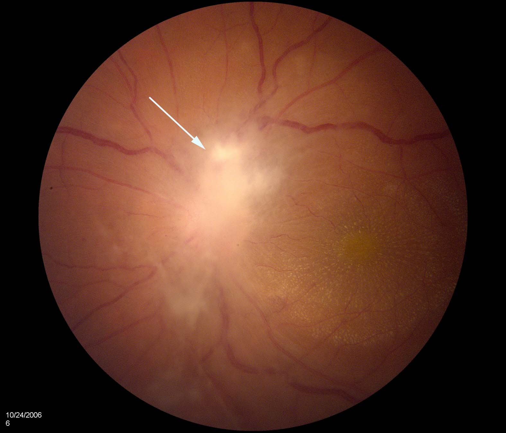
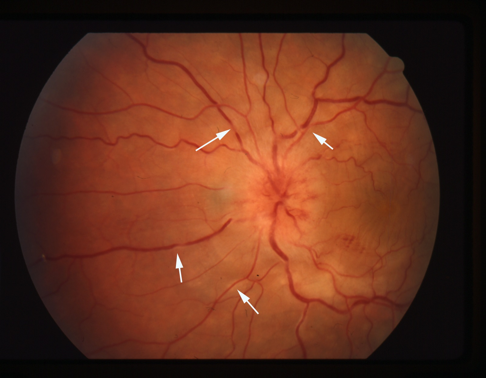
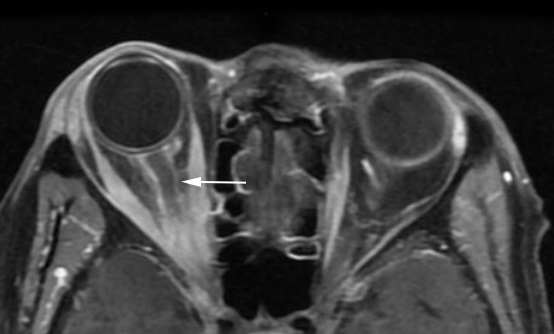

Papillitis (Neuroretinitis)

- Variant of optic neuritis showing inflammation of the prelaminar optic disc
- Called “neuroretinitis” if retinal exudates appear (“macular star figure")
- Common causes: parainfectious autoimmune disorder, idiopathic
- Uncommon causes: sarcoidosis, cat scratch disease, syphilis, Lyme disease, toxoplasmosis

-
Core features
- Acute or subacute vision loss--usually monocular in adults, often binocular in children
- Reduced visual acuity and/or nerve fiber bundle visual field defects
- Afferent pupil defect unless both eyes are equally affected
- Optic disc swelling--often marked and sometimes optic disc surface hemorrhages
- Retinal hard exudates surrounding the fovea (“macular star figure”)
-
Trap: exudates may not appear ophthalmoscopically until 10 or more days after symptom onset but may be seen earlier with optical coherence tomography

-
Possible accompanying features
- Preceding systemic viral illness
- Vitritis
- Retinal perivascular cuffing

- Atypical optic neuritis
- Ischemic optic neuropathy
- Leber hereditary optic neuropathy
- Infiltrative (neoplastic) optic neuropathy
- Hypertensive optic disc edema
- Diabetic papillopathy
- Papilledema
- Central retinal vein occlusion
- Paraneoplastic optic neuropathy
- Compressive optic neuropathy
-
Order orbit/brain MRI
- Often normal because the disease is confined to the prelaminar optic disc, but…
- May show thickening or enhancement of the prelaminar optic disc, orbital optic nerve, its sheath, periorbita, or neighboring meninges
- May show scattered high T2/FLAIR signals in the brain and spinal cord white matter, suggestive of acute disseminated encephalomyelitis (ADEM), especially in children
 - Order blood count, comprehensive metabolic panel, urinalysis, acute phase reactants, chest imaging, and serologies for syphilis, Bartonella henselae IgM, Lyme, and toxoplasmosis, lumbar puncture, as appropriate
- Order serum myelin oligodendrocyte glycoprotein (MOG) antibody if MRI shows retrobulbar inflammatory abnormalities
-
Tip: lumbar puncture can be deferred if the patient has no other neurologic manifestations and a normal brain MRI
- Treat appropriately if an infectious cause is identified
- Treat with corticosteroids if you have excluded infection
- Evaluation for a specific cause of papillitis usually yields negative results
- Elevated Bartonella henselae IgM titer prompts doxycycline treatment of cat scratch disease
- Treatment with appropriate anti-infectives or anti-inflammatory agents may improve vision
-
Trap: evidence that Bartonella causes papillitis is weak and evidence that antibiotic treatment helps is even weaker
- If you identify a more robust cause of papillitis, treatment with appropriate anti-infectives or anti-inflammatory agents may improve vision
- Positive MOG antibody raises concern for recurrence of optic neuritis, but appropriate prophylaxis remains unsettled
- In idiopathic or parainfectious papillitis, expect spontaneous or treatment-related visual improvement within weeks in 50% to 75%, but also expect recurrences; if recurrences threaten vision, consider instituting chronic low-dose prophylactic corticosteroid or other immune-modulating medication